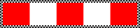

چاپ، بررسی و اندازهگیری
- چاپ را رنگی و افقی، با مقیاس ۱۰۰٪ / Actual size انجام دهید. گزینهٔ «Fit to page» و سربرگ و پابرگ مرورگر را خاموش کنید.
- فاصلهٔ علامتهای ۰ تا ۱۰ زیر را با خطکش واقعی بررسی کنید؛ باید دقیقاً ۱۰ سانتیمتر باشد. خود نوار را هم اندازه بگیرید.
- از لبهٔ بیرونی خط سیاه ببرید؛ تمام حاشیهٔ شطرنجی را نگه دارید. نوار را صاف و بدون تاخوردگی بچسبانید.
- در اپ واحد سانتیمتر را انتخاب کنید. طول و عرض کامل اندازهگیریشده را وارد کنید؛ اگر چاپ درست است، 20 و 4.
- مرجع را روی همان سطح صاف شیء بگذارید. چهار گوشهٔ کادر قرمز را روی چهار گوشهٔ بیرونی حاشیهٔ شطرنجی قرار دهید.
تشخیص خودکار فعلی برای طرح رنگی قدیمی است. برای این طرح، هر چهار گوشه را دستی تنظیم کنید؛ مستطیل قرمز و سفید داخلی مرز مرجع نیست.
متروژیست · نوار مرجع
۲۰ × ۴ سانتیمتر — ابعاد کامل بیرونی، شامل حاشیهٔ شطرنجی.

حاشیهٔ شطرنجی را نگه دارید. چهار گوشهٔ بیرونی آن را علامت بزنید. هر دو بُعد کامل را در اپ وارد کنید.
بررسی چاپ: فاصلهٔ ۰ تا ۱۰ باید دقیقاً ۱۰ سانتیمتر باشد.
چاپ رنگی و افقی با مقیاس ۱۰۰٪ / Actual size. پیش از استفاده با خطکش واقعی بررسی کنید.
راهنما: cocodedk.github.io/Metrologist/fa/user-guide.html
{kind=link}